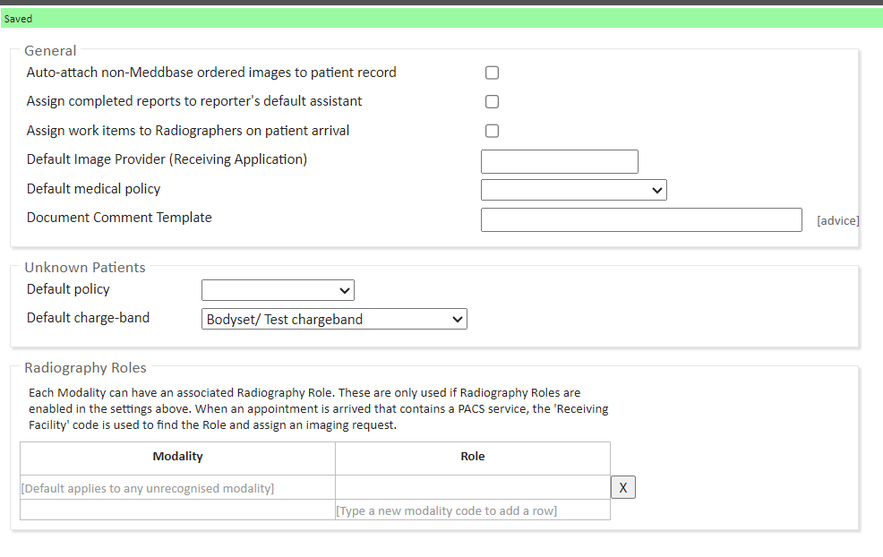

The Meddbase RIS PACS platform is an integrated medical imaging suite designed around the unique requirements and workflows of Radiology Clinics and Imaging Centres wishing to run RIS PACS software and the viewing and managing of their DICOM images.
Meddbase simplifies the complex radiology workflow as the patient moves from reception to the radiographer, to radiologist, and as radiology results are delivered back from the imaging centre to the referring specialists or GP.
All parts of this process and workflow are tracked within Meddbase giving a complete overview to the clinic at any part of the journey. This process of tracking each stage in the workflow electronically offers much greater accuracy, deriving significant benefits when dealing with the relatively high number of staff that are engaged in a typical patient encounter.
Integrated seamlessly into the Visbion PACS solution, Meddbase offers a complete solution to managing any imaging centre or radiology department.
The purpose of this article is to explain the configuration elements of the PACS inbox work type, which is required as part of the setup of the PACS integration in Meddbase.
When PACS/RICS images are received by Meddbase, they are added into the PACS inbox work type, located on the start page under Work and Delegated work, depending on your rolegroup.
Navigate to Admin > Work > Configure Work Types, and select PACS Inbox. In this area, you are defining how work items of the PACS type will behave in your chamber.

Under the General section, you will find the following settings:
Under the Unknown Patients section, you will find the following settings:
Under the Radiography Roles section, you will find settings where each Modailty is mapped/associated to a Rolegroup - Each Modality can have an associated Radiography Role. These are only used if Radiography Roles are enabled in the settings above. When an appointment is arrived that contains a PACS service, the 'Receiving Facility' code is used to find the Role and assign an imaging request.
Place the name of the modality in the left hand side and the role who should receive this work on the right. If you only have one role or one modality use the top row to assign all PACS items to a single role